Debtors filter and search options
The osFinancials5 grid has a powerful and user-friendly filtering and sorting system that makes it quicker and easier than other methods. With just a few mouse clicks, you can group, sort, and filter any column(s) of data on most screens in a Set of Books. This feature is very useful and efficient for managing and analysing data.
Account disabled
By default, only active debtor (customer / client) accounts will be listed when launching the Debtors on the Debtor list screen.
To list the debtor (customer / client) accounts which have been set to "Disabled" on the Accounting information tab, you need to tick the "Show disabled" tick box and click on the Filter button.
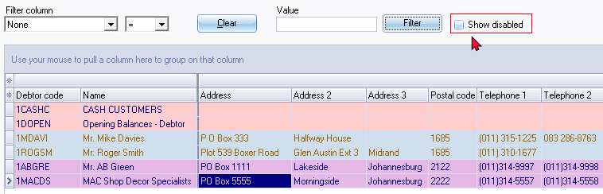
|
|
The "Debtor listing - Credit control listing (Credit limit vs Current balance) as at..." report will display if a debtor (customer / client) account is disabled, or enabled. |

|
|
If the "Show disabled" option is selected, and if you Close active forms or when you reopen the Set of Books, it will by default list only the active (enabled) debtor (customer / client) accounts. |

Search by options
You may use the filter options to find a specific debtor (customer / client) account, or all accounts with the same values, in any of the twenty-eight (28) columns:
|
Default |
Sorted (selected) - Alphabetical list |
|
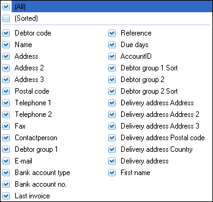 |
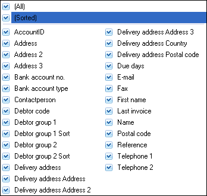 |
To search for specific debtor (customer / client) accounts :
:
- The filter options will display only those debtor (customer / client) accounts in your search or filter criteria. To do this, you may:
- Search by - The default option is none. It will list all the column headings. You may select any of these as an option.
- Like - Operator to find all debtor (customer / client) accounts with the same value, values greater than, smaller than, greater than or equal to, smaller than or equal to the values you have selected, or wish to enter.
- Value - Enter the value for the field type you have selected, for example, Postal code (if you have selected "Postal code" as the "Search by" option).
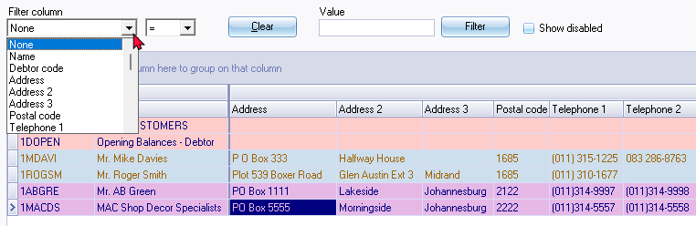
- Once you have selected or specified the search criteria, click on the Filter button. Only those debtor (customer / client) accounts as in your search or filter criteria or options will be listed.
- If you need to clear your filter options and values, click on the Clear button. You may also click on any of the column headings to change the sorting sequence of the debtor (customer / client) accounts listed.
|
|
You may also search for debtor (customer / client) accounts in the "Investigator" screen (Search (Default ribbon)). |
Column headings
All the data for each of your debtor (customer / client) accounts are listed in twenty-eight (28) columns. To view change the sequence in which the data is displayed, you may use the following options:
- Scroll bars - Scroll to the right or to the left on the horizontal scroll bar to view the information.
- Sequence of rows - Click on any of the column headings to change the sorting sequence of the debtor (customer / client) accounts listed in the descending or ascending sequence.
- Sequence of columns - Click on a column heading and drag it to the right or to the left to change the sequence in which the columns need to be displayed.
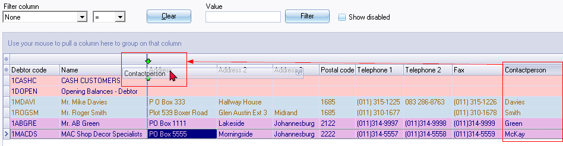
|
|
You may drag and drop any of the columns on the data band to the left band and the columns from the left band to the data band, to customise the grid for your requirements. |
|
|
The sequence of the columns as set will be retained if you close active forms or when you reopen the Set of Books. |
Show / hide bands
All the data for each of your debtor (customer / client) accounts are listed in twenty-eight (28) columns. It is listed in two (2) bands:
Left band - Contains the Debtor code and Name.
Data band - Contains the rest of the data columns.
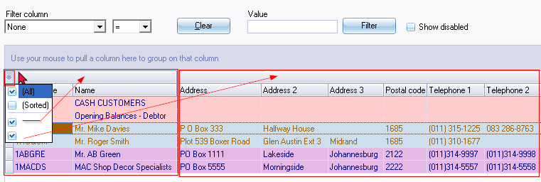
You may drag and drop any of the columns on the data band to the left band and the columns from the left band to the data band, to customise the grid for your requirements.
To hide the columns on the Left band, remove the tick in the first block.
To hide the columns on the Data band, remove the tick in the second block.
Show / hide columns
Click on the second block - Column headings - All the columns will be listed.
Remove the ticks for the columns to hide or select the columns you need to display.
|
|
You may use the Up arrows and/or the Down arrows Right or Left arrows keys to navigate the fields. You may use the Space bar to deselect (remove the tick) or to reselect (tick a field again). |
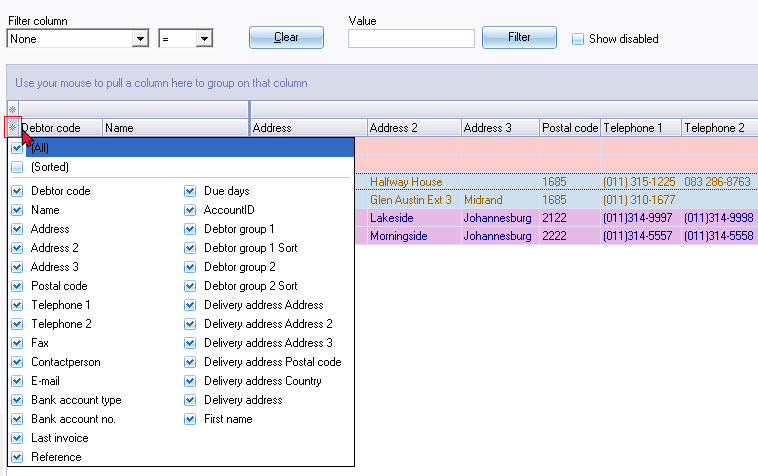
Group columns
You may drag any column heading to the column header "Use your mouse to pull a column here to group on that column" will be displayed and the similar data in columns will be grouped.
Select a column and click on it. While holding the mouse button down, drag it to the "Use your mouse to pull a column here to group on that column" bar. Select any other column to drag and drop it on the the "Use your mouse to pull a column here to group on that column" bar. You may select as many columns, as necessary, to group your data.
You may also drag and drop these columns to the right or left to change the grouping of these columns.
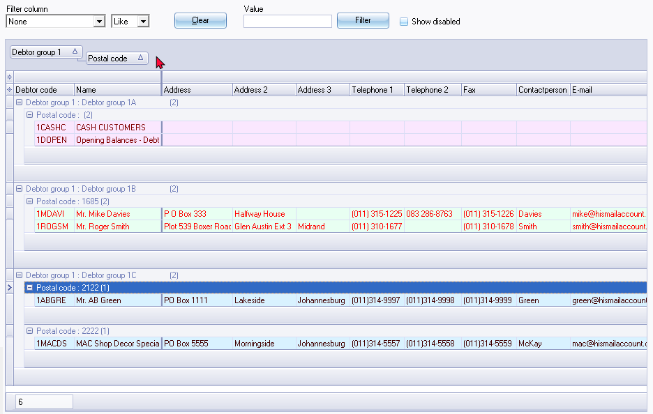
To remove a column from the "Use your mouse to pull a column here to group on that column" bar, you may use the following two (2) options:
- Select the column heading (e.g., “Postal code”) on the "Use your mouse to pull a column here to group on that column" bar, and drag it to the first line (above the column headings). When the mouse pointer change to a big X, drop it. The column will automatically be placed in the correct default sequence (or the place of the previous saved grid layout).
- If you wish to change the column to a specific place, select the column heading (e.g., “Postal code”) on the "Use your mouse to pull a column here to group on that column" bar, and drag it to the second line (column headings). When you drop it, the column will be added to the selected position or sequence of the columns.
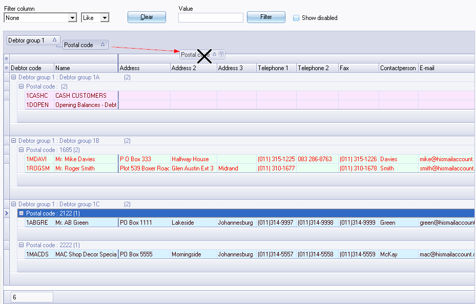
Filter options : Column headings
If you need to view or find specific data, there are various options available to locate and find your data. Some of the options are:
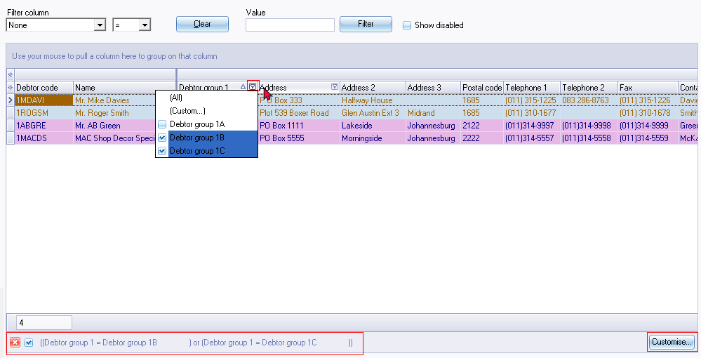
- Sort - Click on a column heading to sort and list the data ascending or descending sequence. All the data is by default displayed ascending; from the smallest to the highest value (e.g. a-z or 0-9) according to the record number (e.g. line number in a batch, etc.) To change the sort order from ascending (e.g. a-z or 0-9) to descending (e.g. z-a or 9-0) select a column and click on it. If you click on it again it will change back to ascending sequence.
- Drag and drop columns - You may click on a column and drag it to the left or to the right to change the sequence your data is displayed on screens.
- Filter - Click in the arrow to list the data in a specific column. A list displaying the data, as well as an All option and a Custom... option in the selected column will be displayed. By adding a tick next to a specific data, only the data, matching that amount will be listed.
- Custom - You can easily build customised filters according to your needs. These filter files can be saved and opened for future use.
Custom filters
Once you have selected data from the list in a column, the your selection will be displayed at the bottom section of the Debtors list screen as follows:
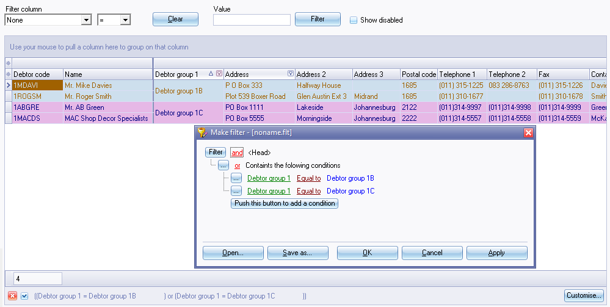
|
|
- To temporarily clear the filter (show all records, remove the tick. To show the filtered records, add the tick again. 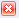 - To delete the filter, click on the close icon. |
You may click on the (Custom...) option on a column list; or click on the Customise... button to:
- Make a filter (add or delete conditions and groups).
- Save a filter.
- Open a filter.
Make a custom filter
To make a filter:
- Click on the (Custom...) option on a column list; or click on the Customise button.
- Select an operator (i.e. and, or, and not, or not).
- Click on the Filter button (or on the … button) and select one of the following options on the context menu:
- New Condition
- New Group
- Delete row (If you click on the Filter button, you may delete all rows (conditions and groups)).
- Select a column from the list of available data applicable to the screen.
- Select a filter condition. In this example, the Between is selected. Another field is opened to select another date.
- Once you have created your conditions or groups, click on the Apply button.
- Click on the OK button to close and exit this "Make filter" screen.
Conditions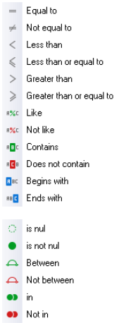
- Equal to - list or display all values which is the same as the specified value.
- Not equal to - list or display all values which is not the same as the specified value.
- Less than - list or display all values smaller than the specified value.
- Less than or equal to - list or display all values smaller or equal to the specified value.
- Greater than - list or display all values greater than the specified value.
- Greater than or equal to - list or display all values greater or equal to the specified value.
- Like - list all values in the table similar to the specified value.
- Not like - list all values in the table not similar to the specified value.
- Contains - list all values in the table, which contains specified value.
- Does not contain - list all values in the table, which does not contain specified value.
- Begins with - starts with the specified value in the table.
- Ends with - ends with the specified value in the table.
- Is null - excludes any value entered, will not be listed or displayed.
- Is not null - is not zero - any value which is not equal to zero will be listed or displayed.
- Between - Specify specific values, etc. to include only matching values.
- Not between - Specify specific values, etc. to exclude values.
- In - In a specified value.
- Not in - Not in a specified value.
Save custom filter files
To save a custom filter file:
- Once you have sorted or filtered your data with the Make filter utility, click on the Save as... button. The "Save active filter" screen will be displayed.
- Select a Directory in which you wish to save the custom filter file.
- Enter a file name.
- Click on the Save button to save the Filter in a (*.flt) Filter file format. You may then at any later stage open the saved *.flt file.
Open custom filter files
To open a saved a custom filter file:
- Once you have sorted or filtered your data with the Make filter utility, click on the Open... button. The "Open a saved filter" screen will be displayed.
- Select a Directory in which you have saved the custom filter file.
- Select a valid filter file.
- Click on the Open button. The selected filter file's name will be displayed in the titlebar of the "Make filter" screen.